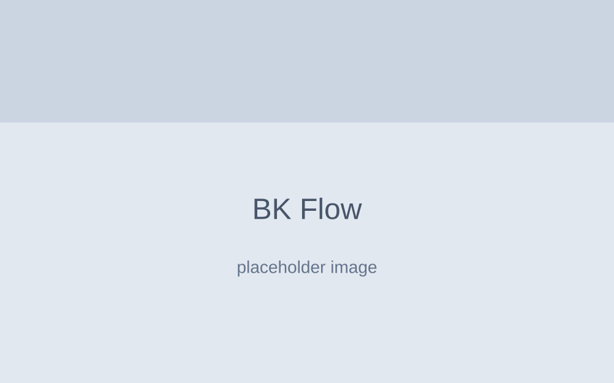

SaaS / Workflow Automations
BK Flow
Plataforma SaaS corporativa para gestão de fluxo de trabalho. Arquitetura serverless garantindo isolamento de dados (multi-tenant) e processos assíncronos que não travam o dia a dia do usuário.
Reduziu o tempo médio de processamento em 52%
React
TypeScript
Supabase RLS
Serverless